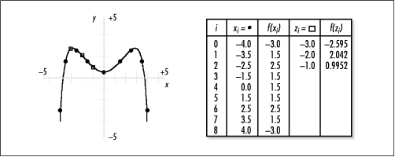
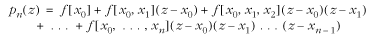
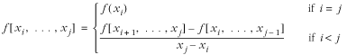
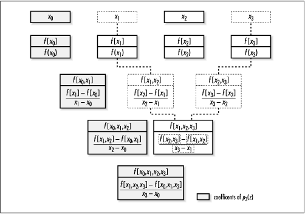
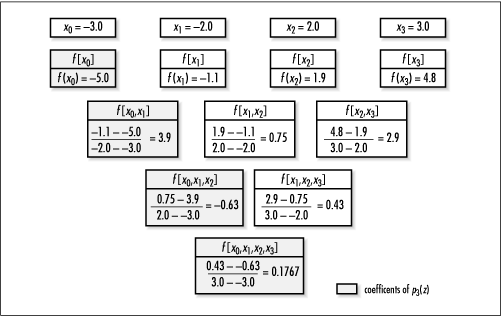
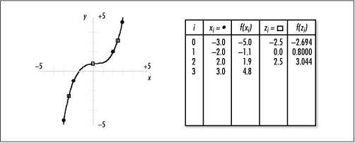

13.1 Description of Polynomial
Interpolation
There are
many problems that can be described in terms of a function.
However, often this function is not known, and we must infer
what we can about it from only a small number of points. To do
this, we interpolate between
the points. For example, in Figure
13.1, the known points along f (x)
are x0, . . ., x8, shown by circular
black dots. Interpolation helps us get a good idea of the
value of the function at points z0, z1, and z2, shown by white
squares. This section presents polynomial interpolation.

Fundamental to polynomial interpolation is
the construction of a special polynomial called an interpolating polynomial. To
appreciate the significance of this polynomial, let's look at
some principles of polynomials in
general. First, a polynomial is a function of the form:
p(x) =
a0+a1x+a2x2+. . . +anxn
where a0, . . ., an are coefficients. Polynomials of
this form are said to have degree n, provided an is nonzero. This is the power form
of a
polynomial, which is especially common in mathematical
discussions. However, other forms of polynomials are more
convenient in certain contexts. For example, a form
particularly relevant to polynomial interpolation is the Newton
form:
p(x) =
a0+a1(x-c1)+a2(x-c1)(x-c2)+ . . . +an(x-c1)(x-c2). . . (x-cn)
where a0, . . ., an are coefficients and c1, . . ., cn are centers. Notice how when c1, . . ., cn are all 0, the Newton form of a
polynomial reduces to the power form above.
13.1.1 Constructing an
Interpolating Polynomial
Now that we
understand a bit about polynomials, let's look at how to
construct the polynomial that interpolates a function f (x).
To interpolate f (x), a polynomial pn(z)
of degree  n is constructed using n + 1 points, x0, . . ., xn, known along f (x).
The points x0, . .
., xn are called interpolation points. Using pn(z),
we approximate the value of f
(x) at x=z. Interpolation requires that
point z be on the interval
[x0, xn]. pn(z)
is constructed using the formula: n is constructed using n + 1 points, x0, . . ., xn, known along f (x).
The points x0, . .
., xn are called interpolation points. Using pn(z),
we approximate the value of f
(x) at x=z. Interpolation requires that
point z be on the interval
[x0, xn]. pn(z)
is constructed using the formula:

where x0, . . ., xn are the points along f (x)
for which values are known, and f
[ x0], . . .,
f [x0, . . ., xn] are divided differences, which are
derived from x0, . .
., xn and the values of f (x)
at these points. This is called the Newton formula
for interpolating polynomials. Notice its similarities with the Newton
form of polynomials in general. Divided differences are
computed using the formula:

Notice that this formula shows that for
divided differences when i <
j we must have computed other
divided differences beforehand. For example, to compute f [x0, x1, x2, x3], values are required
for f [x1, x2, x3] and f [x0, x1, x2] in the numerator.
Fortunately, we can use a divided-difference table to help
compute divided differences in a systematic manner (see Figure
13.2).
A divided-difference table consists of
several rows. The top row stores x0, . . ., xn. The second row stores values for
f [x0], . . ., f [xn]. To compute each divided
difference in the remainder of the table, we draw a diagonal
from each divided difference back to f [xi
] and f [xj ] (shown as dotted lines for f [x1, x2, x3] in Figure
13.2). To get xi and xj in the denominator, we then
proceed straight up from f
[xi ] and f [xj
]. The two divided differences in the numerator are those
immediately above the one being computed. When the table is
complete, the coefficients for the interpolating polynomial
are the divided differences at the far left of each row,
beginning with the second row (shown in light gray in Figure
13.2).

13.1.2 Evaluating an Interpolating
Polynomial
Once we have
determined the coefficients of the interpolating polynomial
pn(z), we evaluate the polynomial once
for each point at which we would like to know the value of
f. For example, say we know the
values of f at four points:
x0 = -3.0, f (x0) = -5.0; x1 = -2.0, f (x1) = -1.1; x2 = 2.0, f (x2) = 1.9; and x3 = 3.0, f (x3) = 4.8; and we would
like to know the value of f at
z0 = -2.5, z1 = 0.0, z2 = 1.0, and z3 = 2.5. Since we know
four points along f, the
interpolating polynomial will have a degree of 3. Figure
13.3 is the divided-difference table for determining the
coefficients of p3(z).

Once we have obtained the coefficients from the divided-difference table, we
construct p3(z) using the Newton formula for
interpolating polynomials presented earlier. Using the
coefficients from Figure
13.3, the interpolating polynomial is:
p3(z) = -5.0+3.9(z+3.0)+(-0.63)(z+3.0)(z+2.0)+0.1767(z+3.0)(z+2.0)(z-2.0)
Next, we evaluate this polynomial once at
each point z. For example, at
z0 = -2.5 we perform
the following calculation:
p3(-2.5) =
-5.0+3.9(0.5)+(-0.63)(0.5)(-0.5)+0.1767(0.5)(-0.5)(-4.5) =
-2.694
The value of f
at z1, z2, and z3 is determined in a
similar manner. The results are tabulated and plotted in Figure
13.4.

Now that we have an
understanding of how to interpolate a function, it is
important to briefly mention the subject of error. As with any
approximation method, it is important to understand that an
interpolating polynomial usually has some amount of error
associated with it. To minimize this error, qualitatively
speaking, we must construct an interpolating polynomial using
enough points along f (x), and ones properly spaced, so that
the resulting polynomial gives an accurate impression of the
function's character. Naturally, quantitative methods do exist
for bounding the error associated with interpolation, but this
book will not address them (see the related topics at the end
of the chapter). |